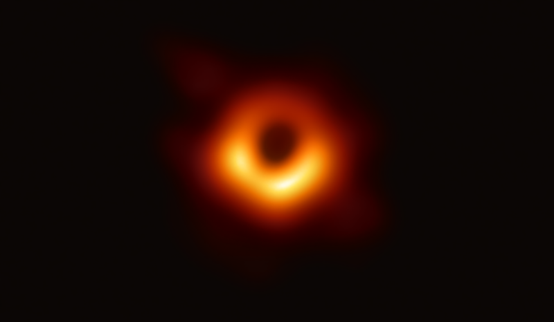

Black Holes
⬤ Where Spacetime Ends

Artistic rendering: black hole with accretion disc
A black hole is a region of spacetime where gravity is so immense that nothing not even light can escape its gravitational pull once it crosses a boundary called the event horizon. Black holes form when massive stars exhaust their nuclear fuel and collapse under their own gravity, sometimes triggering a spectacular explosion known as a supernova.
First theorised as mathematical solutions to Albert Einstein’s General Theory of Relativity in 1916, black holes were considered theoretical curiosities for decades. Today, astronomers have not only confirmed their existence but have captured the first direct image of one: the supermassive black hole at the centre of galaxy M87, photographed by the Event Horizon Telescope in April 2019.
Special Astronomical Symbols
Types of Black Holes
Astronomers classify black holes into three main categories based on their mass. Each type forms through different processes and plays a distinct role in the universe’s evolution.
- Stellar Black Holes
- The most common type, formed when a massive star (at least 20 times the mass of the Sun) collapses at the end of its life. Stellar black holes typically have masses between 3 and 100 times that of the Sun. The closest known stellar black hole, Gaia BH1, is located about 1,560 light-years from Earth.
- Intermediate Black Holes
- With masses between 100 and 100,000 solar masses, intermediate black holes bridge the gap between stellar and supermassive varieties. They are rarely observed and may form through the merging of multiple stellar black holes in dense star clusters.
- Supermassive Black Holes
- Lurking at the centres of most large galaxies, supermassive black holes range from millions to billions of solar masses. The Milky Way hosts Sagittarius A*, a supermassive black hole with a mass of roughly 4 million Suns. When actively feeding on surrounding matter, they become quasars the brightest persistent objects in the universe.
- Primordial Black Holes (Theoretical)
- Hypothetical black holes that may have formed in the very early universe, less than a second after the Big Bang. If they exist, they could range from microscopic to very large sizes and may contribute to the mysterious dark matter that makes up 27% of the universe.
Key Concepts
- Event Horizon The point of no return around a black hole. Once any matter or light crosses this boundary, it cannot escape. The radius of the event horizon is called the Schwarzschild radius.
- Singularity The theoretical point at the centre of a black hole where density becomes infinite and known physics breaks down. General relativity predicts singularities; quantum mechanics may resolve them.
- Accretion Disc A swirling disc of superheated gas and dust orbiting the black hole. As material falls inward, friction heats it to millions of degrees, causing it to glow brightly across the electromagnetic spectrum.
- Hawking Radiation Proposed by physicist Stephen Hawking in 1974, this quantum effect predicts that black holes slowly emit thermal radiation and gradually evaporate over astronomical timescales. Smaller black holes evaporate faster than larger ones.
- Gravitational Time Dilation Near a black hole, extreme gravity causes time to pass more slowly relative to a distant observer. This effect, predicted by Einstein, has been experimentally confirmed on Earth using atomic clocks.
Key Milestones in Black Hole History
- 1916 Karl Schwarzschild derives the first exact solution to Einstein’s field equations, describing the geometry around a point mass.
- 1964 Cygnus X-1 is discovered as the first widely accepted black hole candidate from X-ray observations made by a sounding rocket.
- 1974 Stephen Hawking theorises that black holes emit thermal radiation (Hawking Radiation) due to quantum effects near the event horizon.
- 2015 LIGO detects gravitational waves from two merging stellar black holes, directly confirming their existence for the first time.
- 2019 The Event Horizon Telescope releases the first-ever photograph of a black hole: the supermassive M87* at 55 million light-years away.
Notable Black Holes
| Name | Type | Mass (Solar Masses) | Location | Notable Fact |
|---|---|---|---|---|
| Sagittarius A* | Supermassive | ~4 million | Milky Way Centre | Imaged in 2022 by the Event Horizon Telescope |
| M87* | Supermassive | 6.5 billion | Galaxy M87 | First black hole ever directly photographed (2019) |
| Cygnus X-1 | Stellar | ~21 | Milky Way | First widely accepted black hole candidate, discovered 1964 |
| TON 618 | Supermassive | 66 billion | Canes Venatici | One of the most massive black holes ever found |
| Gaia BH1 | Stellar | ~9.9 | Ophiuchus (1,560 ly) | Closest known black hole to Earth, discovered 2022 |
Learn more about black hole research at the Event Horizon Telescope Collaboration website.